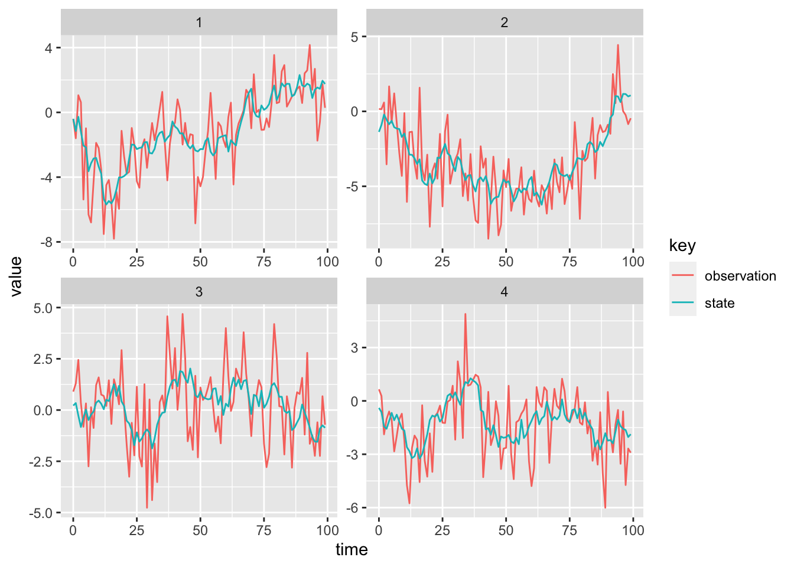
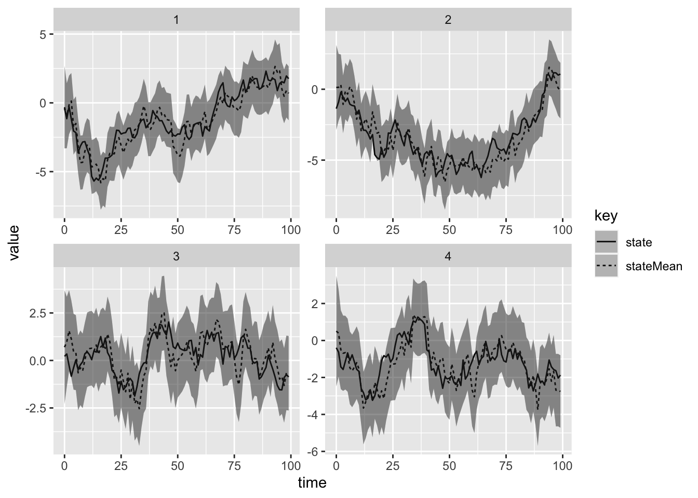

A Dynamic Linear Model (DLM) is a special type of state space model, where the state and observation equations are Normally distributed and linear. A general DLM can be written as follows:
\[\begin{aligned} y_t &= F_t x_t + \nu_t, &\nu_t &\sim \mathcal{N}(0, V_t) \\ x_t &= G_tx_{t-1} + \omega_t &\omega_t &\sim \mathcal{N}(0, W_t), \end{aligned}\]
\(y_t\) represents the observation of the process at time \(t\), \(x_t\) is the value of the unobserved state at time \(t\). The observation error \(\nu_t\) and the system error \(\omega_t\) are independent and identically distributed Normal random variables. \(F_t\) is the observation matrix which transforms the state space to the observation, \(G_t\) is the state transition matrix.
Forward Simulating from the DLM
A first order polynomial DLM with constant \(V\) and \(W\), and \(F_t = 1\), \(G_t = 1\). can be simulated in scala as follows:
import breeze.stats.distributions.Gaussian
case class Data(time: Time, observation: Observation, state: Option[State])
case class Parameters(v: Double, w: Double, m0: Double, c0: Double)
def simulate(p: Parameters): Stream[Data] = {
val stateSpace = Stream.iterate(Gaussian(p.m0, sqrt(p.c0)).draw)(x => Gaussian(x, sqrt(p.w)).draw)
stateSpace.zipWithIndex map { case (x, t) =>
Data(t, x + Gaussian(0, sqrt(p.v)).draw, Some(x))
}
}
val p = Parameters(3.0, 0.5, 0.0, 10.0)
// simulate 16 different realisations of 100 observations, representing 16 stations
val data = (1 to 16) map (id => (id, simulate(p).take(100).toVector))We use the built in streaming library’s iterate function to specify the evolution of the latent state. The initial state \(x_0\) is a sample drawn from a normal distribution with mean \(m_0\) and variance \(C_0\), \(x_t \sim \mathcal{N}(x_0 ; m_0, C_0)\). The Breeze numerical computing library provides many statistical and mathematical functions is used. Subsequent states are generated by adding \(\mathcal{N}(0, W)\) to the previous state:
\[x_t = x_{t-1} + \omega, \qquad \omega \sim \mathcal{N}(0, V)\]
We then construct a Stream of Data objects. The Data object has a timestamped observation and an optional state space. We construct the observation at time \(t\) by simply adding the observation noise to the state space \(y_t \sim \mathcal{N}(y_t | x_t, V)\). The state is optional because we can’t observe the state of real data, only simulated data will have a known state.
A graph of the data from four “stations”, produced using ggplot2 in R is shown in the figure below.
An Aside on Referential Transparency
Note that the function simulate is not referentially transparent, meaning the function will return a different Stream of data each time we run it. Referential transparency is important in functional programming, to allow us to easily reason about complex programs. The Breeze library implements another object for stateful random number generation, the Process object. The MarkovChain object can be used to construct a process without drawing explicitly from the distribution until we run the program. Firstly define a single step of the random walk:
import breeze.stats.distributions._
def step_rw(p: Parameters): Double => Rand[Double] =
x => Gaussian(x, p.w)If step_rw is supplied with a set of Parameters, it returns a function from the current state, which is assumed to be materialised, to the next state, which is a Rand[Double]. The actual random number isn’t generated until we sample from distribution represented by Rand. Next, we can construct a MarkovChain using the transition kernel stepRw:
val random_walk: Process[Double] = MarkovChain(0.0)(step_rw(p))
random_walk.
steps.
take(100)The Kalman Filter
The Kalman Filter can be used to determine the posterior distribution of the state space given the current observation and the \(p(x_t|D_{t})\), where \(D_t = \{Y_t, D_{t-1}\}\) and \(D_0\) is the initial information, comprising of the parameters mode parameters \(W_0\) and \(V_0\) and the initial state \(x_0 \sim N(m_0, C_0)\). The full treatment of the Kalman Filter can be found in the excellent Bayesian Forecasting for Dynamic Models by West and Harrison.
I will present the filtering equations for the simple model in this post. Suppose we start with the posterior distribution of \(x_{t-1} \sim N(m_{t-1}, C_{t-1})\). The first thing we need to do is advance the state, the equation to advance the state is a simple Markov transition \(x_t = x_{t-1} + \omega_t\). We simply add the system variance, the system variance is drawn from a Normal distribution with zero mean and variance \(W\). The sum of two Normal distributions is Normal with the mean and variance added, hence the prior for \((x_t | D_{t-1}) \sim N(m_{t-1}, C_{t-1} + W)\).
Next we need to construct the observation, using the observation equation which is commonly called the one-step forecast for the series, \(y_t = x_t + \nu_t\), since \(\nu_t\) is Normally distributed with zero mean and variance \(V\), the distribution of the one step forecast is, \((y_t|D_{t-1}) \sim N(m_{t-1}, C_{t-1} + W + V)\).
Now, we observe the true value of \(y_t\) and are able to construct the posterior distribution of \((x_t | D_t) \sim N(m_t, C_t)\). \(m_t = m_{t-1} + A_t e_t\) and \(C_t = A_tV\). \(A_t = \frac{C_{t-1} + W}{ C_{t-1} + W + V}\) is known as the regression coefficient, and \(e_t = Y_t - m_{t-1}\). This result can be shown using properties of the multivariate normal distribution, and is presented in full in Bayesian Forecasting for Dynamic Models by West and Harrison.
We now have the equations required to program up the Kalman Filter using Scala.
case class FilterState(data: Data, p: Parameters)
def filter(p: Parameters): (FilterState, Data) => FilterState = (s, d) => {
val r = s.p.c0 + p.w
val q = r + p.v
val e = d.observation - s.p.m0
// kalman gain
val k = r / q
val c1 = k * p.v
// return the data with the expectation of the hidden state and the updated Parameters
FilterOut(Data(d.time, d.observation, Some(m1)), Parameters(p.v, p.w, m1, c1))
} The function filter simply takes in Parameters and one observation, represented by Data and returns the updated parameters required for the next step of the filter. Now we need to write a function which filters a sequence of Data, and returns a sequence consisting of the latent states, which we can do using the function scanLeft.
A simplified function signature of scanLeft is given by: scanLeft[A](l: List[A], z: A)(f: (A, A) => A): List[A]. A list, l with elements of type A and an initial value, z also of type A if passed to a Function2 and accumulated into another list with elements of type A. The function f is applied to each element of the list pairwise, starting the the head of the lift and the zero element, z. Consider calculating the sum of a list of numbers:
val numbers = List(1,2,3,4,5)
def sum(a: Int, b: Int): Int = a + b
numbers.scanLeft(0)(sum)
// List(0, 1, 3, 6, 10, 15)The first calculation is (0 + 1) = 1, which is then used as the first argument in the pairwise sum function, then the second calculation is (1 + 2) = 3, the result of which is used again in the next application of sum. Each intermediate step of the calculation is retained and appended to a list to be output when the list of number is exhausted, so we end up with a cumulative sum, List(0, 1, 3, 6, 10, 15). We can use scanLeft and the Function2, filter to calculate and retain the latent states in a DLM:
def filterSeries(data: Seq[Data], initParams: Parameters): Seq[FilterOut] = {
val initFilter = FilterState(data.head, params, 0.0) // initialise the filter
data.
scanLeft(initFilter)(filter(initParams)).
drop(1)
}Now, we can apply the filter to all the stations simultaneously:
data.
groupBy{ case (id, _) => id }. //groups by id
map{ case (id, idAndData) =>
(id, idAndData map (x => x._2)) }. // changes into (id, data) pairs
map{ case (id, data) =>
(id, filterSeries(data.sortBy(_.time), p)) } // apply the filter to the sorted dataWe can now plot the results of the filtering using R and ggplot2, overlaid with 95% prediction intervals.
filtered = read_csv(
here::here("notebooks/data/filteredDlm.csv"),
c("stationId", "time", "observation", "stateMean", "m", "c")
)
## calculate upper and lower 95% bounds of the state estimate
filtered %>%
select(-observation) %>%
inner_join(data, by = c("time", "stationId")) %>%
filter(stationId %in% 1:4) %>%
mutate(upper = qnorm(p = 0.975, mean = m, sd = sqrt(c)),
lower = qnorm(p = 0.025, mean = m, sd = sqrt(c))) %>%
select(-c, -m, -observation) %>%
gather(key, value, -time, -stationId, -upper, -lower) %>%
ggplot(aes(x = time, y = value, linetype = key)) +
geom_line() +
geom_ribbon(aes(x = time, ymin = lower, ymax = upper), alpha = 0.3) +
facet_wrap(~stationId, scales = "free")
The full code is available in a notebook file and an ammonite script in the GitHub Repo associated with this blog.
Citation
BibTeX citation:
@online{law2016,
author = {Jonny Law},
title = {The {Kalman} {Filter} in {Scala}},
date = {2016-12-12},
langid = {en}
}
For attribution, please cite this work as:
Jonny Law. 2016. “The Kalman Filter in Scala.” December 12,
2016.